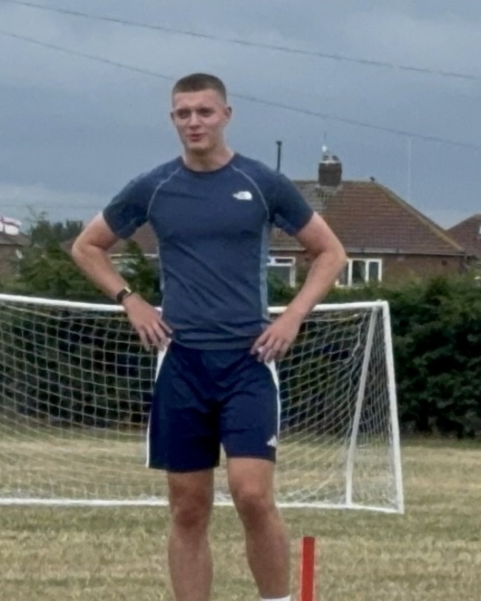

Who Joe is as a player, and where the pivot fits into his broader profile.
Joe Eason is an 18-year-old athlete from Stockton-on-Tees currently playing pivot for FutsalUOS in the National Futsal Series Tier 2 North. Now in his first NFS season, he has scored 8 goals from 7 appearances.
His head coach at FutsalUOS describes him as athletic, physically strong, technically excellent — able to protect the ball, beat players 1v1 and finish. At 6'2" and 84kg with elite verified sprint and jump numbers, he brings the physical presence a modern pivot needs, matched by two-footed technique and the composure to receive with a defender close.
Away from futsal, Joe has an extensive senior football background — playing central midfield and centre-back at Step 4 and 5 of the English non-league pyramid, with independently verified S&C data from nine years at PROformance Athlete Development. That base carries directly into the pivot role: acceleration for the press, jump for aerial reach in the attacking third, frame for hold-up.
Off the pitch, he coaches at Thornaby Women's FC as an assistant, is a Level 1 Personal Trainer, and works as an assistant strength & conditioning coach at PROformance alongside his own training. Nine GCSEs at grades 7–9, Duke of Edinburgh Award, and qualified referee.
"An athletic, physically strong, technically excellent pivot who can protect the ball, beat players 1v1 and finish."
